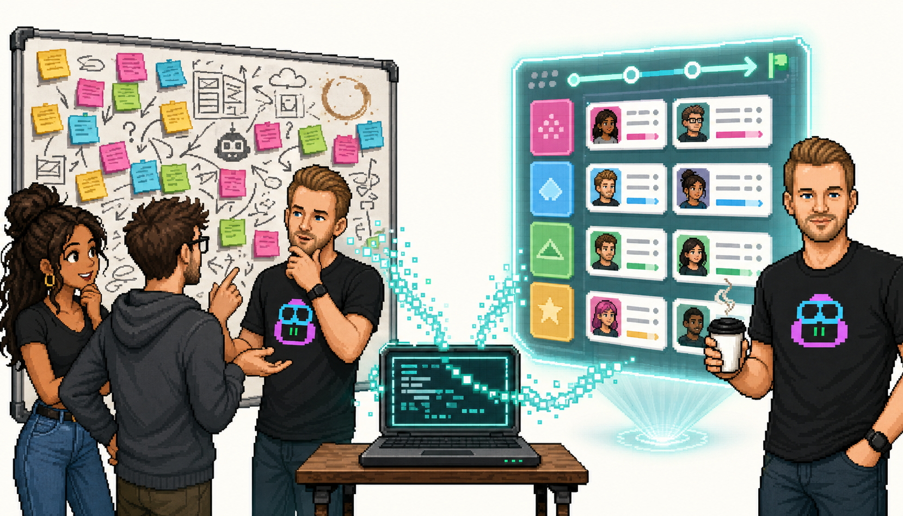
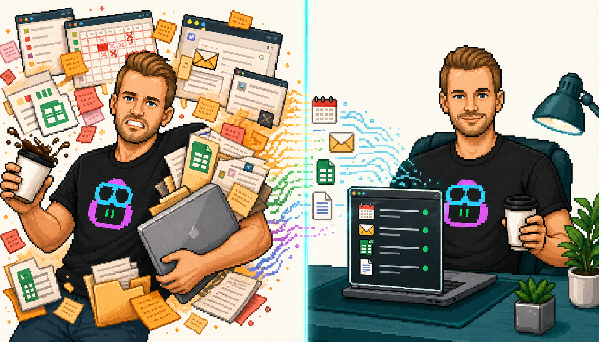

60 min · Hands-On Workshop
Your Operational Copilot
From M365 help to repeatable, tool-connected partner workflows
Johan Wallquist · Partner Solution Architect · Microsoft
Scroll or press ↓ to begin

Where does this fit?
The Copilot Ladder
Each layer adds capability. You’re already on the first rung.
Squad
Multi-agent coordination. Long-running, role-divided, memory-heavy work.
Agency
Microsoft integration layer. Internal auth, shared plugins, telemetry, governance.
GitHub Copilot CLI
Operationalizes work. Multi-step, multi-source, repeatable, inspectable.
M365 Copilot
Helps you with work. Draft, summarize, find. One task at a time.
Today we focus on rung 2 — where your work becomes operational.

Why this matters now
The Barrier Collapsed
AI crossed a threshold. Three capabilities changed everything.
🧠
Reasoning
AI plans multi-step tasks. It doesn’t just answer — it decomposes, sequences, and executes.
🔧
Tool Use
MCP connects AI to your systems. PMX, MSX, email, calendar — real data, real actions.
🔄
Self-Correction
AI checks its own work. Iterate, improve, converge — in loops, not one-shots.
Understand
→
Plan
→
Act
→
Check
→
Iterate
Wrapped in: human review · governance · data boundaries
The four properties
Not Another Chat Window
Four things M365 Copilot doesn’t do — and CLI does.
🔌
Tool-Connected — Calls PMX, MSX, M365, GitHub. Real data from your actual systems — not guesses.
🔁
Repeatable — Same workflow, different partner. Build once, reuse. Share patterns across your team.
📋
Inspectable — Output is an artifact — a plan, a doc, a file. Not a chat bubble that disappears.
🧠
Persistent — /resume continues where you left off. Context, decisions, progress — across days.
Demo — The Briefing Factory
Five Tabs → One Conversation
PMX + MSX + M365 → structured partner briefing. Repeatable for any partner.
Watch: which tools it calls, what artifact it produces, and how the workflow becomes reusable.
Your turn
Build Your Own Partner Briefing
Pick a partner
→
Pull data
→
Get your briefing
Copy the prompt from your exercise sheet. Replace the partner name. See what comes back.
Demo — From Conversation to Structure
Great Workshop. Now What?
Raw notes → phased plan with tasks, owners, risks, and next steps.
The gap between “we agreed” and “someone acts” — CLI bridges it.
Your turn — pick a scenario
Pick Your Scenario
📋
Workshop → Plan — turn rough notes into a structured action plan
🔍
Opportunity Gaps — find and fix missing outcome links across your projects
📧
Multi-Source Email — draft partner comms informed by PMX + M365 data
🗺
Research → Roadmap — combine /research with pipeline data for strategic suggestions
Where this goes
From Personal Tool to Team Capability
CLI becomes powerful when workflows are standardized, shared, and governed.
📝
Instructions & Skills
Teach CLI your team’s patterns. Reusable prompts, custom skills, instruction files — shared via repo.
🔌
Agency
Microsoft integration layer. Internal auth, telemetry, shared plugin marketplace, curated MCPs — no manual config.
👥
Squad
When work gets big: multi-agent teams with memory, roles, coordination. Long-running initiatives, not one-off tasks.
The question is not “can I use this?” — it’s “what workflow should my team standardize first?”
What you walk away with
You Now Have
1
operational Copilot — not just a helper
3
connected tools (PMX · MSX · M365)
2
reusable workflow patterns to try this week
- Try one real task this week — a Connect prep, a workshop plan, an opportunity review
- Share the cheat sheet with a colleague — see if they find the same delta
- Take the beginner course for deeper skills — 2 hours, self-paced
Beginner course: gh.io/copilot-cli-course
Official docs: docs.github.com/copilot/cli